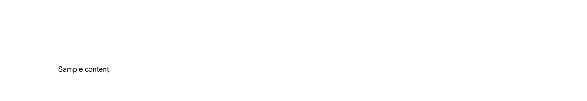

A semicircular (half-circle) gauge or dial that shows one measurement inside a known range, drawn as an SVG arc that fills from the left and animates to its new position. Reach for it when the number is a *level being read*, not a task being finished: CPU, memory, load average or server utilisation on an infrastructure dashboard; disk, storage or bandwidth used against a plan; API rate-limit, quota or credit consumption; a health, uptime, performance, SEO or Lighthouse-style score; a speedometer or throughput readout; temperature, humidity, pressure or a sensor reading on an IoT panel; battery, signal or capacity level; a credit, risk, trust or fraud score; NPS and satisfaction; and KPI, quota or target attainment on a sales or revenue dashboard. Common asks it answers: "gauge component", "gauge chart react", "semi circle gauge", "half circle progress", "speedometer component", "dial component", "meter component react", "radial gauge", "arc progress", "score gauge", "KPI gauge", "utilization gauge", "shadcn gauge", "shadcn meter", "shadcn speedometer", "tailwind gauge component", "react-gauge-chart alternative". Official shadcn/ui has no gauge, meter, dial or speedometer, and the two items that look adjacent are not substitutes: `progress` is a linear bar that means *how far along*, and `chart` is a Recharts wrapper — a charting library you install (recharts) and configure with data series, which can be bent into a radial bar but arrives as a chart rather than as a labelled single-value readout. The distinction is also the accessibility one, and it is the reason this is not a progress ring: a gauge exposes `role="meter"` with `aria-valuemin`, `aria-valuemax` and `aria-valuenow`, which is what assistive technology reads as "a measurement within a range", where `role="progressbar"` announces a task advancing toward completion. Getting that backwards is the single most common mistake in hand-rolled dials, and it is invisible until someone uses a screen reader. Set `segments` to change the arc colour at thresholds — green under 60, amber under 85, red to 100 — passing shadcn/Tailwind colour classes so the zones follow light and dark mode; omit it for a single primary-coloured dial. `min`/`max` set the scale, `showValue` renders the number in the centre, `formatValue` formats it (percent, bytes, ms, currency), `label` adds a caption, and `children` replaces the centre entirely when you want a sparkline, a delta or an icon in there. One file, no charting library, no icon package — nothing beyond your `cn` util.

Rendered on the shadcn default neutral palette with harness-generated props.
pnpm dlx shadcn@4.21.0 add @pulld/gauge
| licence | POINTER |
|---|---|
| primitive base | none |
| type | registry:ui |
| files | src/components/ui/gauge.tsx |
| npm deps pulled | none beyond the pre-installed peer set |
| registry deps | — |
| semantic / palette / hex | 9 / 2 / 0 |
| writes shared ui/ | yes — can overwrite the project’s own primitives |